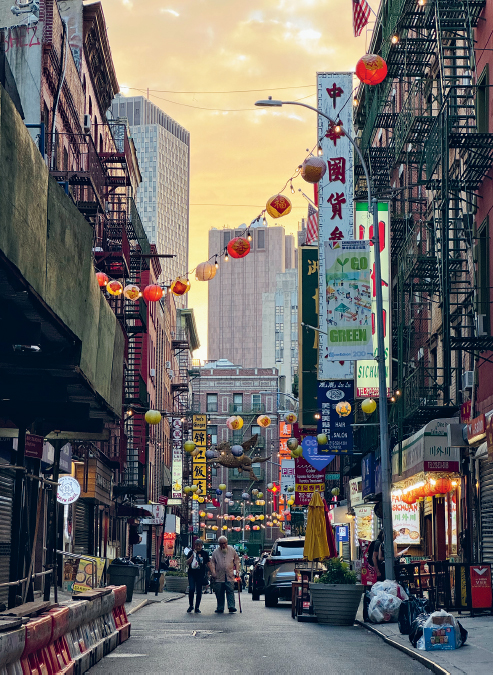
Notes from Route 03 of Walking New York: a south-to-north walk through three neighborhoods that became gateways to America. The route starts over the buried Collect Pond, crosses the historic centers of Chinese and Jewish New York, passes through the former German district, and ends in the East Village.
Getting there
Start at Worth and Baxter Streets, beside Columbus Park. Canal St (J/Z or N/Q/R/W/6) is the most useful subway hub; Brooklyn Bridge–City Hall (4/5/6) is also nearby. The route ends at Tompkins Square Park. From there, walk west to Astor Place (6) or northeast to 1 Av (L). Allow extra time for the Eldridge Street museum, food stops, and the density of details along St Mark's Place.
Why this walk matters
For a visitor, “the Lower East Side” can sound like one fixed neighborhood. Historically it was a succession of arrival zones. Irish, German, Chinese, Jewish, Italian, Puerto Rican, Ukrainian, Black, and Hispanic communities all built institutions here. People often moved elsewhere as they gained money or faced displacement, while new arrivals reused the same streets and buildings.
Chinatown grew around Mott, Pell, and Doyers Streets as Chinese migrants sought safety from exclusion and violence. The Lower East Side became shorthand for the American immigrant experience, especially Jewish tenement life. The name East Village arrived only in the 1950s and 60s, partly to distinguish the area north of Houston from the less fashionable Lower East Side and associate it with Greenwich Village.
The larger story is how migration changes a city—and how the city changes migrants. Synagogues become churches, churches become synagogues, a German clinic becomes offices, a Yiddish newspaper becomes apartments, and a working-class district becomes expensive. What remains is not a frozen ethnic museum but layers of institutions, food, architecture, memory, and argument.
Map
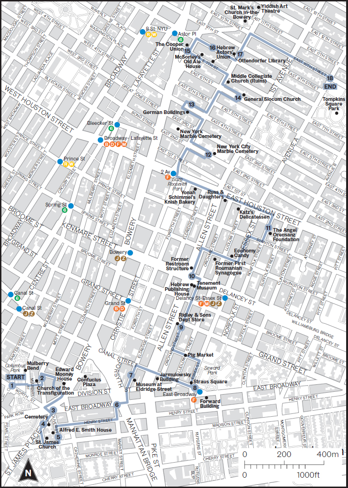
Timeline: immigration and reinvention
Sephardic refugees arrive despite Peter Stuyvesant's opposition.
Unstable fill helps create the Five Points slum.
The growing city pushes into what had been countryside.
Kleindeutschland grows while Peter Cooper builds a free school.
Chinese exclusion hardens while Eastern European Jewish migration expands; Eldridge Street Synagogue opens.
Images of poverty build support for clearing Five Points.
More than 1,000 die, accelerating the dispersal of Little Germany.
New infrastructure and immigrant institutions reshape the skyline.
Sara D. Roosevelt Park replaces tenements and institutions.
The stops
1Five Points
This ordinary intersection once gave its name to America's most notorious 19th-century slum. Cross, Anthony, and Orange Streets met in a five-way collision over the former Collect Pond. The city drained the polluted pond by 1811, but springs kept flowing, the canal worked badly, and buildings sank into wet, unstable fill. Poverty here was not just personal misfortune; it was literally built on failed infrastructure.
Jacob Riis made the district nationally infamous in his 1890 book How the Other Half Lives. Reformers used his photography to argue for sanitation, housing regulation, and demolition. By 1900 much of the old street pattern had vanished; Worth and Baxter are among its last traces.
2Historic Chinatown
By the 1880s roughly 2,000 Chinese immigrants lived around Mott, Pell, and Doyers Streets. Many had first gone west for mining and railroad work, then moved east as anti-Chinese violence intensified in California. Restaurants, tea parlors, shops, and associations made this both a safe haven and a destination for curious outsiders.
That tourist image can hide why the district's closeness was necessary. Federal exclusion laws, racial caricatures, raids, and restrictions on citizenship made community institutions essential. The Immigration and Nationality Act of 1965 finally ended the old national-origin quota system. The metropolitan Chinese population has since grown toward one million, with major centers in Flushing, Sunset Park, and along East Broadway; Mandarin is more prominent in many newer districts than the Cantonese traditionally heard here.
3Chatham Square
The plaza may feel like a leftover traffic island, but in the 19th century it played the role Times Square later assumed: crowds, entertainment, all-night activity, and some of the world's earliest illuminated shop signs. It also marks the southern end of the Bowery, Manhattan's oldest major road.
Bouwerij is Dutch for farm. The road connected New Amsterdam to farms farther up the island and likely followed a route used before Dutch colonization. From this junction, Chinatown, Two Bridges, the Civic Center, the Seaport, and the Lower East Side all sit within a short walk.
4First Jewish Cemetery
This tiny cemetery predates the Lower East Side's famous Eastern European Jewish era by about two centuries. Sephardic Jews fleeing persecution in Iberia and Brazil arrived in 1654. Peter Stuyvesant tried to exclude them, but Dutch religious-liberty rules allowed them to remain. Their congregation, Shearith Israel, is still active and is the oldest continuous Jewish congregation in the Western Hemisphere.
Joseph Bueno de Mesquita purchased burial land beside the Bowery Road in 1682; the first burial followed in 1683. The cemetery remained active until 1831. George Washington would have passed it—already a century old—while reentering New York after British evacuation in 1783.
5Al Smith House
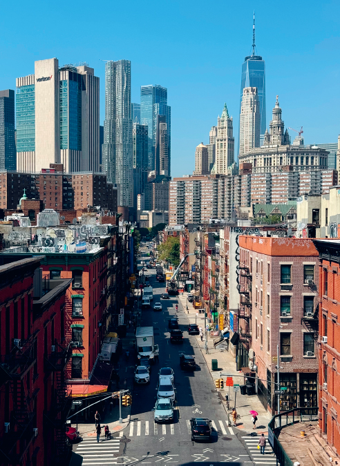
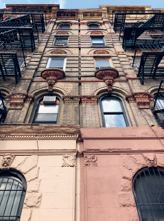
Alfred E. Smith lived at 25 Oliver Street from 1907 to 1923. A child of the Lower East Side, he became governor of New York and, in 1928, the first Catholic nominee of a major party for president. He lost to Herbert Hoover amid intense anti-Catholic prejudice.
6Manhattan Bridge
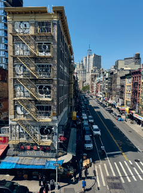
The Manhattan Bridge opened on December 31, 1909, eleven years after Brooklyn became part of Greater New York. It relieved the older Brooklyn Bridge and carries subway trains, cars, bicycles, and pedestrians. Its massive approach cut into the existing neighborhood while making movement between boroughs much easier.
7Eldridge Street Synagogue
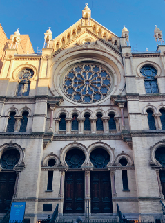
Completed in 1887 for Congregation Khal Adath Jeshurun, the blond-brick synagogue uses Moorish arches, terracotta, painted ceilings, gilding, and a great rose window. At its peak the congregation had more than 4,000 members. The building contradicts the stereotype that the Lower East Side contained only desperate poverty; immigrant communities also accumulated wealth and built ambitious institutions.
New York's Jewish population rose from about 13,000 in 1847 to more than 200,000 in 1890. As families moved uptown and outward in the 1910s and 20s, the main sanctuary became unaffordable and closed in the 1930s. A rescue begun in the 1980s led to a two-decade restoration and reopening in 2007 as the Museum at Eldridge Street.
8Straus Square and the Forward
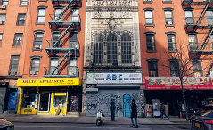
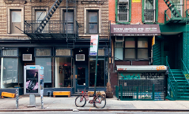
At Canal, Essex, and East Broadway, commercial routes met in the center of Yiddish-speaking New York. The twelve-story Forward Building opened in 1912 for the progressive Jewish Daily Forward, founded in 1897. During World War I its circulation approached 200,000, making it a practical guide to American life and the reference point around which other Jewish newspapers positioned themselves.
The paper left in 1974 and the building became apartments, but “FORWARD” remains in orange brick. Nearby Hester Street was a wall of pushcarts. At Hester and Ludlow, the “pig market” was a daily hiring shape-up where small garment contractors assembled workers for short production runs.
9Ridley & Sons Department Store
Grand Street was the Lower East Side's major retail corridor, fed by a ferry to Brooklyn before the Williamsburg Bridge. English immigrant Edward Ridley founded his store in 1848. By 1886 it occupied a rebuilt five-story cast-iron block at Grand and Orchard and employed an estimated 2,500 people.
As shopping moved uptown to Ladies' Mile and Herald Square, Ridley stayed behind and closed in 1901. Allen Street's later widening exposed a new side of the building, which received a Deco-influenced brick facade.
10Tenements and the Allen Street Malls
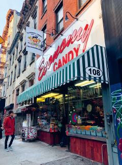
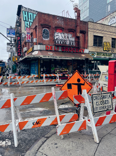
The Tenement Museum, founded in 1988 inside preserved buildings on Orchard Street, interprets the homes and workplaces of immigrant families. Next door, the grandly named Bank of the United States failed in 1931 and became the Hebrew Publishing Company. Both buildings sit beside Allen Street, widened in the 1930s to bring circulation, light, and air into one of the world's densest districts.
The widening exposed what had been the plain backs of buildings. The center malls now soften the avenue, but the abrupt rear facades show that an entire strip of the neighborhood was removed.
11Oldest Synagogue Building and Lenin
The Gothic Revival building at 172–176 Norfolk opened in 1850 for Ansche Chesed, one of New York's first Ashkenazi congregations. With room for 1,200 people, it was then the city's largest synagogue. Congregations came and went as members moved; the building closed in 1974 and was later revived by artist Angel Orensanz as a gallery, performance space, and occasional synagogue.
Next door, look up to an 18-foot statue of Vladimir Lenin. Commissioned as the Soviet Union collapsed, it reached a building called Red Square on Houston Street in 1994, where it faced toward Wall Street. A property sale displaced it in 2016; it reappeared here the next year.
12The Marble Cemeteries
Two independent cemeteries hide in adjacent blocks: New York Marble Cemetery west of 2nd Avenue (1830) and New York City Marble Cemetery east of it (1831). They were the city's first nonsectarian, for-profit burial grounds. The western one has no headstones and is barely visible through its gate; the eastern one opens behind a high fence on East 2nd Street.
President James Monroe was buried in the latter after his 1831 death in New York, then moved to Richmond, Virginia, in 1858.
13German East 4th Street
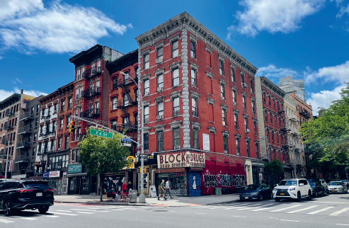
North of Houston you enter the former Kleindeutschland, or Little Germany. Refugees from the revolutions of 1848–49 and Bismarck's anti-socialist laws built a mixed German-speaking community of Jews and Christians. Its food culture helped shape what later Americans understood as Jewish deli food, including corned beef, salami, and tongue.
At 74 East 4th, the 1873 Aschenbroedel Verein musicians' club displays busts of Mozart, Wagner, and Beethoven; La MaMa theater has occupied it since 1967. Nos. 66–68 housed a German gymnastics and socialist club and possibly America's first Yiddish theatrical production. At No. 62, an 1890 assembly hall hides a spiral fire escape inside an ornamental metal grille.
14St Mark's Lutheran Church
The small 1847 German Lutheran church at 325 East 6th organized an annual Long Island picnic. On June 15, 1904, it chartered the steamboat General Slocum for 1,358 passengers, mostly women and children. A fire spread through oily material; rotten life jackets failed; many passengers could not swim in heavy clothing. More than 1,000 people died near North Brother Island.
The disaster was New York's deadliest until September 11, 2001. Nearly every German family downtown or in Yorkville knew a victim. The congregation and Kleindeutschland never recovered; movement uptown accelerated, and the church became the 6th Street Community Synagogue in 1940.
15The Cooper Union
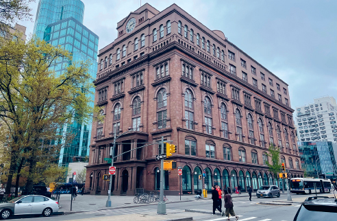
Inventor and industrialist Peter Cooper made fortunes in glue, locomotives, iron beams, and the transatlantic telegraph. He spent about $600,000 to open Cooper Union in 1859 as a free school for people excluded by wealth or social position. Women studied in coeducational classes; workers attended at night; public reading rooms stayed open late.
Abraham Lincoln's 1860 speech here helped turn him from a regional politician into a credible presidential candidate. Nearby on East 7th, early-1830s houses, the former Hebrew Actors' Union, and McSorley's Old Ale House show the neighborhood's residential, theatrical, labor, and drinking history in one block.
16St Mark's Place
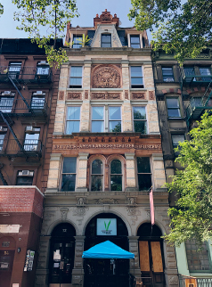
This three-block stretch of East 8th Street is the East Village's main street. Farmland became an elite 1830s suburb, then an Irish and German immigrant corridor, then a center for Beats, hippies, punks, and anarchists. Every generation tends to declare that its version was authentic and the next one killed it.
No. 4, the 1832 Hamilton-Holly House, preserves the affluent first phase. No. 12, built in 1888 for the German-American Shooting Society, preserves Kleindeutschland. Nos. 19–23 moved from rowhouses to German music club, ballroom, Polish venue, and finally the Electric Circus, where the Velvet Underground, Grateful Dead, and Tina Turner performed in the late 1960s.
17Ottendorfer Library and German Dispensary
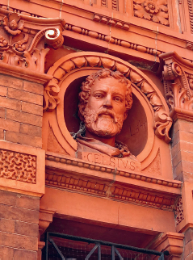
Anna and Oswald Ottendorfer, publishers of the influential New Yorker Staats-Zeitung, funded a free library and medical clinic for Little Germany. Both ornate red-brick and terracotta buildings opened in 1884. Anna, a Bavarian immigrant who had expanded the newspaper after her first husband's death, died shortly before completion; the dedication also served as her memorial.
The library joined the New York Public Library in 1901 and is the city's oldest library building still serving its original purpose. The dispensary evolved institutionally into Lenox Hill Hospital; this building later became offices.
18Tompkins Square Park
The 10.5-acre park lies in Alphabet City, the part of Manhattan extending east of 1st Avenue into Avenues A through D. Laid out in 1834, it was expected to attract wealthy residents but proved too far from Broadway. Working-class housing instead filled the surrounding streets.
That made the park a recurring stage for conflict: riots in 1857, 1863, and 1874; anti-war demonstrations in the 1960s; and confrontations over police removal of unhoused residents in the late 1980s and early 1990s. Today rising rents and luxury development test a neighborhood identity built around immigrants, labor, art, music, and refuge for people priced out elsewhere.
Eat along the route
The route passes enough food history to become an all-day walk: Chinatown's Mott and Pell Street restaurants; Economy Candy on Rivington; Katz's for pastrami; Russ & Daughters for appetizing; Yonah Schimmel for knishes; McSorley's for ale; and Veselka for pierogi and borscht. These are not side notes—the foods show how immigrant traditions entered the shared vocabulary of New York.